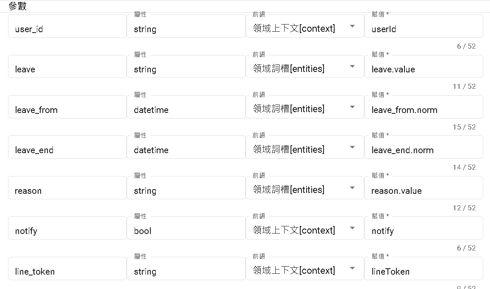
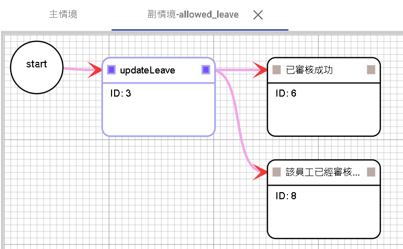
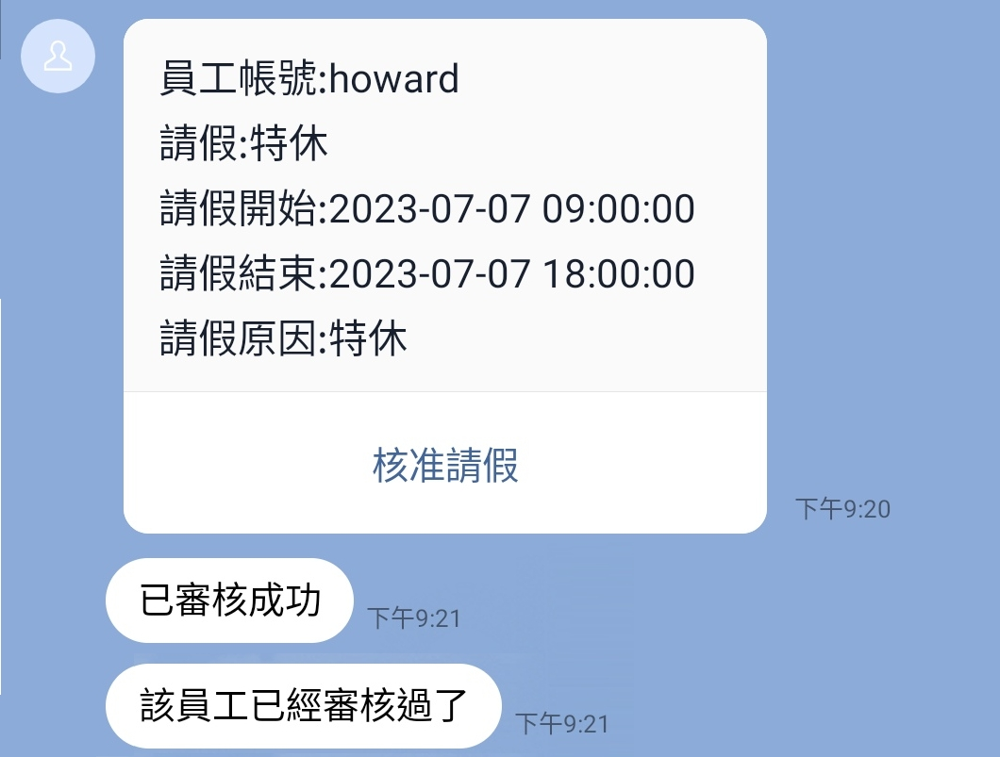

設計和實現請假系統的步驟
主要流程
flowchart LR
A["員工登入綁定"]
B["員工申請休假"]
C["主管批准休假"]
D["通知團隊"]
A --> B --> C --> D
次要流程
- 查詢紀錄
- 取消請假
(本章節將不會探討次要流程的設計)
使用意圖設計申請休假
先創建辭典
leave_type
- 特休;特休假
- 病假
- 事假
- 其他
另外仍有防疫照顧假、喪假、防疫隔離假、謀職假、婚假、產檢假、產假、安胎假、育嬰留職停薪、陪產假、公傷病假、公假、家庭照顧假、生理假等可自行添加。
1.創建詞槽
| 詞槽 | 引用詞典 | 別名 |
|---|---|---|
| leave | leave_type | 請假 |
| reason | @ANY | 請假原因 |
| leave_from | @TIME | 請假開始時間 |
| leave_end | @TIME | 請假結束時間 |
2.將說法填入
我想請{leave}從{leave_from}到{leave_end}
我想從{leave_from}開始請假
我想請假從{leave_from}到{leave_end}
我想請假
我想請{leave}
3.如果要加上確認
確認要再添加yes以及no的意圖，建立完成後，接續問法如下
您好再向您確認一下以下資訊是否正確。
請假名稱:${#entities.leave.value}
請假開始時間:${%extractTime(#entities.leave_from.norm,'yyyy-MM-dd HH:mm:ss','')}
請假結束時間:${%extractTime(#entities.leave_end.norm,'yyyy-MM-dd HH:mm:ss','')}
如果命中yes意圖則會導向完成。 如果命中no意圖則會直接結束對話。 如果命中其他意圖會進行其他意圖對話。
4.完成
提交主管審核，得透過resource使用API對外交互。
您好，將為您提交請假申請給主管審核。
請假名稱:${#entities.leave.value}
請假開始時間:${%extractTime(#entities.leave_from.norm,'yyyy-MM-dd HH:mm:ss','')}
請假結束時間:${%extractTime(#entities.leave_end.norm,'yyyy-MM-dd HH:mm:ss','')}
如何向對外交互
此範例將由Google Apps Script作為範例。
我們可以先透過Login的方式，定義是用者的權限。 我們可以透過下一章的LINE平台-帳號連結
我們在帳號連結得到的資料是
| username | password | nonce | user_id |
|---|
新增一個欄位叫manager這邊放上主管的user_id
| username | password | nonce | user_id | manager |
|---|
直接自己把自己連接的userId填寫到manager即可，在此略過建立主管、主管註冊、主管登入等步驟。
也就是說你可以參考以下填寫。
| username | password | nonce | user_id | manager |
|---|---|---|---|---|
| howard | 123456 | xxxx | U1234XXX | U1234XXX |
我們在上面第四點的完成部分"您好，將為您提交請假申請給主管審核。"，所以必須將獲得的資料建立在另一個Spreadsheets，於是我們新增第二個工作表。欄位如下。
| id | user_id | leave | leave_from | leave_end | reason | audit |
|---|
其中audit為true or false，為當前假期是否審核過。
於是在程式碼.gs由此寫下
function searchUser(userId) {
var id = '{{你的Spreadsheet ID}}';
var spreadsheet = SpreadsheetApp.openById(id);
var sheet = spreadsheet.getSheets()[0];
var data = sheet.getDataRange().getValues();
for (var i = 1; i < data.length; i++) {
var storeUserId = data[i][3];
if (storeUserId === userId) {
return { success: true, user: data[i] };
}
}
return { sucess: false };
}
function formatTimestamp(timestamp) {
var date = new Date(timestamp * 1000);
var year = date.getFullYear();
var month = ('0' + (date.getMonth() + 1)).slice(-2);
var day = ('0' + date.getDate()).slice(-2);
var hours = ('0' + date.getHours()).slice(-2);
var minutes = ('0' + date.getMinutes()).slice(-2);
var seconds = ('0' + date.getSeconds()).slice(-2);
var formattedDate = year + '-' + month + '-' + day + ' ' + hours + ':' + minutes + ':' + seconds;
return formattedDate;
}
function sendMessageToManager(userId, user, lineToken, leave, leave_from, leave_end, reason, leave_id) {
const username = user[0];
const managerId = user[4];
const endpoint = 'https://api.line.me/v2/bot/message/push';
var message = {
to: managerId, messages: [
{
type: 'template',
altText: '員工請假通知',
template: {
type: 'buttons',
text: `員工帳號:${username}
請假:${leave}
請假開始:${formatTimestamp(leave_from)}
請假結束:${formatTimestamp(leave_end)}
請假原因:${reason}`,
actions: [
{ type: 'postback', label: '核准請假', data: `/allowed_leave "${leave_id}" ` }
]
}
}
]
};
var options = {
method: 'post',
headers: {
'Content-Type': 'application/json',
'Authorization': lineToken
},
payload: JSON.stringify(message)
};
var response = UrlFetchApp.fetch(endpoint, options);
Logger.log('LINE push message sent. Response code: ' + response.getResponseCode());
}
function createLeave(userId, leave, leave_from, leave_end, reason, audit) {
var id = '{{你的Spreadsheet ID}}';
var spreadsheet = SpreadsheetApp.openById(id);
var sheet = spreadsheet.getSheets()[1];
var uniqueID = Utilities.getUuid();
var rowData = [uniqueID, userId, leave, leave_from, leave_end, reason, audit];
sheet.appendRow(rowData);
return { success: true, id: uniqueID };
}
function updateLeaveAudit(leaveId, notify, lineToken) {
if (leaveId) {
var id = '{{你的Spreadsheet ID}}';
var spreadsheet = SpreadsheetApp.openById(id);
var sheet = spreadsheet.getSheets()[1];
var data = sheet.getDataRange().getValues();
for (var i = 1; i < data.length; i++) {
var storeId = data[i][0];
if (storeId === leaveId) {
let audit = data[i][6];
if (audit === false) {
var cell = sheet.getRange("G" + (i + 1));
cell.setValue(true);
var userId = data[i][1];
if (notify && lineToken) {
const leave = data[i][2];
const leave_from = data[i][3];
const leave_end = data[i][4];
const reason = data[i][5];
const r = searchUser(userId);
const endpoint = 'https://api.line.me/v2/bot/message/push';
var message = {
to: userId, messages: [
{
type: 'text',
text: `員工帳號:${r.user[0]} 已審核請假
請假:${leave}
請假開始:${formatTimestamp(leave_from)}
請假結束:${formatTimestamp(leave_end)}
請假原因:${reason}`
}
]
};
var options = {
method: 'post',
headers: {
'Content-Type': 'application/json',
'Authorization': lineToken
},
payload: JSON.stringify(message)
}; var response = UrlFetchApp.fetch(endpoint, options);
Logger.log('LINE push message sent. Response code: ' + response.getResponseCode());
}
} else {
return { success: false }
}
break;
}
}
}
return { success: true }
}
function doPost(e) {
var param = JSON.parse(e.postData.contents);
let action = param.action;
var result = {};
if (action === 'createLeave') {
let userId = param.userId;
let leave = param.leave;
let leave_from = param.leave_from;
let leave_end = param.leave_end;
let reason = param.reason;
let notify = param.notify;
let lineToken = param.lineToken;
let audit = false;
result = createLeave(userId, leave, leave_from, leave_end, reason, audit);
if (userId && notify && lineToken) {
const r = searchUser(userId);
if (r.user[4] && notify && lineToken) {
sendMessageToManager(userId, r.user, lineToken, leave, leave_from, leave_end, reason, result.id);
}
}
}else if (action === 'updateLeave') {
let id = param.id;
let notify = param.notify;
let lineToken = param.lineToken;
result = updateLeaveAudit(id, notify, lineToken);
}
Logger.log(result);
return ContentService.createTextOutput(JSON.stringify(result))
.setMimeType(ContentService.MimeType.JSON);
}
分別新增二個action分別是createLeave、updateLeave
- createLeave：新增請假原因，其中notify跟lineToken是因為在測試領域的時候，不應該通知主管，需整合機器人流程才可執行。lineToken包含"Bearer "
- updateLeave：將指定id的leave中的audit轉為true
新增好兩個action後，繼續完成領域資源。
領域資源設定
建立變數分別是
| 名稱 | 屬性 |
|---|---|
| success | bool |
| notify | bool |
| reason | string |
| leave_end | datetime |
| leave_from | datetime |
| leave | string |
| user_id | string |
| line_token | string |
建立資源
資源名稱: saveLeave
URL:script.google.com/macros/s/{{生產部屬的ID}}/exec
Method: POST
Content-Type: JSON
參數
| 鍵 | path |
|---|---|
| user_id | userId |
| leave | |
| leave_from | |
| leave_end | |
| reason | |
| notify | |
| line_token | lineToken |
{
"action": "createLeave",
"userId": "",
"leave": "",
"leave_from": "",
"leave_end": "",
"reason": "",
"notify": "notify",
"lineToken": ""
}
notify是指要不要通知主管。
回傳值
| JSON Path | 鍵 |
|---|---|
| success | success |

回到DmFlow做流程
1.可以先在config.lineToken 新增line token，以Bearer xxxx(此範例未將Bearer拆開)
2.新增變數
| 名稱 | 屬性 |
|---|---|
| success | bool |
| notify | bool |
| user_id | string |
| leave_id | string |
3.建立資源
資源名稱: updateLeave
URL:script.google.com/macros/s/{{生產部屬的ID}}/exec
Method: POST
Content-Type: JSON
參數
| 鍵 | path |
|---|---|
| leave_id | id |
| notify | |
| line_token | lineToken |
{
"action": "updateLeave",
"notify": false,
"lineToken": "",
"id": ""
}
notify是指要不要通知使用者審核已經過了。
回傳值
| JSON Path | 鍵 |
|---|---|
| success | success |
4.領域設定
開啟請假領域並添加傳遞變數分別為
| 鍵 | 前綴 | 值 |
|---|---|---|
| notify | constant | true |
| lineToken | config | lineToken |
| userId | sys_user | userId |
5.新增allowed_leave 場景

ID 3 資源節點
選取updateLeave
參數：
notify->constant true
leave_id->conversation._params.0
line_token->config.lineToken
回傳值：
success->success
Start->ID 3 條件節點
條件為
conversation._params.0 已填充
sys_user.platform = constant @line
ID 6 回覆節點
文本：已審核成功
取消等待用戶回覆
ID 8 回覆節點
文本：該員工已經審核過了
取消等待用戶回覆
ID 3->ID 6 條件節點
條件為
conversation.success = constant true
ID 3->ID 8 條件節點
條件為
conversation.success = constant false
並在主節點，隨便放下調用節點，並選取請假領域即可。
6.更新並發布
實際畫面：
使用者要求請假

審核者畫面

最後若是此範例完畢，記得管理部屬作業將該程序封存，讓程序下線，避免已經綁定信用卡的使用者造成不必要的費用問題。